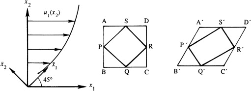

There are three ways to create or destroy vorticity in a flow: nonconservative body forces, a nonbarotropic pressure-density relationship, and nonzero net viscous torques.
Nonconservative body forces:
the Coriolis acceleration is a nonconservative body force that occurs in rotating frames of reference, and it, together with vortex stretching, can generate a drain or bathtub vortex when a fully quiescent water tank on the earth’s surface is drained
Nonbarotropic pressure-density relationship:
nonbarotropic effects can lead to vorticity generation when a vertical barrier is removed between two side-by-side initially motionless fluids having different densities in the same container and subject to a gravitational field. The two fluids will tumble as the heavier one slumps to the container’s bottom and the lighter one surges to the container’s top
Nonzero net viscous torques:
nonzero net viscous torques create vorticity. The conditions for vorticity creation via viscous torques often occur at solid boundaries where the no-slip condition is maintained. A short distance above a solid boundary, the velocity parallel to the boundary may be nearly uniform. The resulting shear-flow velocity profile that links the surface with the above-surface uniform flow commonly leads to a net viscous torque and vorticity creation

1Bath tub vortex. EPFL.
https://www.epfl.ch/labs/lfmi/projects/accomplished-projects/bath-hub-vortex/
2Flow Illustrator.
http://www.flowillustrator.com/fluid-dynamics/case-studies/bathtub-vortex.php